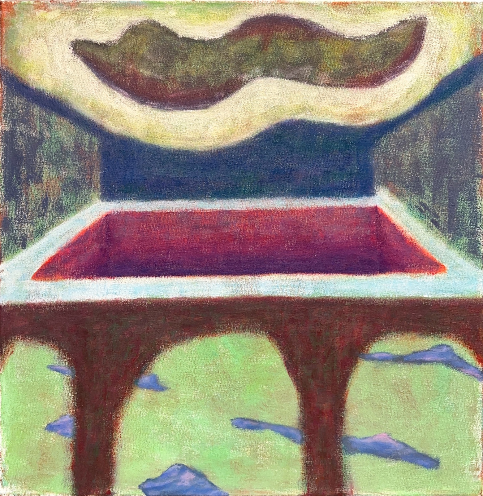
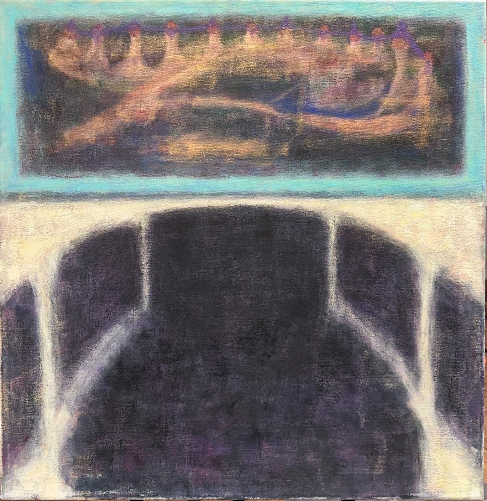

PROJECT 02 / 2024
Madeleina cupcakes II
Painting / Virtual reality
A project across physical and virtual media.
Mixed media on canvas, 60 × 60 cm; digital painting and HD video, 02:13, 1440 × 1080 px; virtual reality, variable dimensions.

